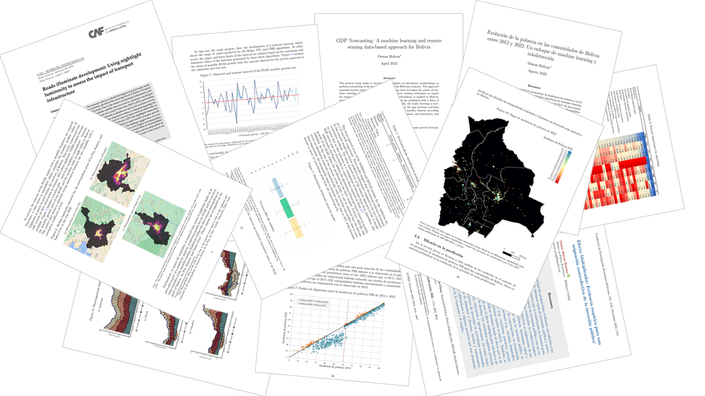

My Website
Osmar Bolivar
My Website - Osmar Bolivar
A Little About Myself.
Passionate about leveraging quantitative analysis to drive impactful insights in economics. Proficient in econometrics, machine learning and remote sensing for cutting-edge socioeconomic analysis. Eager to perpetuate the fusion of data and policy for meaningful societal impact.

Explore a repository of empirical evidence and technical insights designed to foster in-depth exploration and dialogue on the structural and conjunctural aspects of Bolivia's economy and global regions. This platform aspires to offer content that not only serves academic investigation but also proves instrumental in the formulation of data-driven policies.


Get in touch.
Should you require additional information, please do not hesitate to reach out to me.